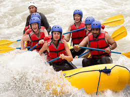
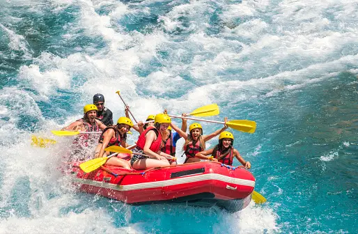

Ready for an Adventure?
Contact us to book your trip!
Trip 1: Peru Rafting
Embark on an adrenaline-fueled journey through Peru's majestic landscapes with our Peru Rafting trip. Navigate thrilling rapids amidst the breathtaking Andean scenery, immersing yourself in the natural beauty of the region. Led by experienced guides, this adventure offers the perfect blend of excitement and exploration. Encounter remote villages, wildlife, and rich cultural heritage along the way. Whether you're a seasoned rafter or new to the sport, our Peru Rafting trip promises an unforgettable experience for all adventurers.
Trip 2: River Niger Experience
Experience the mesmerizing charm of the River Niger with our unforgettable River Niger Experience trip. Glide along the gentle currents of one of West Africa's most iconic waterways, surrounded by lush greenery and vibrant wildlife. Led by seasoned guides, this journey offers a unique blend of relaxation and adventure. Immerse yourself in the rich history and culture of the region as you pass by traditional villages and historic landmarks. Whether you're seeking tranquility or seeking new horizons, the River Niger Experience trip promises an enriching and unforgettable expedition.
Trip 3: benue River Explorers

Embark on an exhilarating adventure with our Benue River Explorers trip. Navigate the untamed waters of the Benue River, weaving through rugged landscapes and breathtaking scenery. Led by experienced guides, this expedition offers an immersive experience into the heart of Nigeria's wilderness. Encounter diverse wildlife, from majestic birds to elusive mammals, as you traverse the river's winding course. Discover hidden gems along the riverbanks, from picturesque waterfalls to ancient caves. Whether you're a thrill-seeker or a nature enthusiast, the Benue River Explorers trip promises an unforgettable journey filled with excitement and discovery.
Available Trips
| Trip | Location | Dates | Duration | Price |
|---|---|---|---|---|
| Peru Rafting | Peru | July-August | 5 days | $1500 |
| River Niger Rafting | Nigeria | July-August | 3 days | $2000 |
| River Benue Rafting | Nigeria | september | 4 days | $1000 |